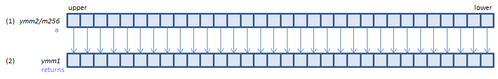

PABSB - Packed ABSolute Byte
PABSB xmm1, xmm2/m128 (SS3
__m128i _mm_abs_epi8(__m128i a)
VPABSB xmm1, xmm2/m128 (V1
__m128i _mm_abs_epi8(__m128i a)
VPABSB xmm1{k1}{z}, xmm2/m128 (V5+BW+VL
__m128i _mm_mask_abs_epi8(__m128i s, __mmask16 k, __m128i a)
__m128i _mm_maskz_abs_epi8(__mmask16 k, __m128i a)
For each BYTE, set the abosolute value of (1) to (2).
VPABSB ymm1, ymm2/m256 (V2
__m256i _mm256_abs_epi8(__m256i a)
VPABSB ymm1{k1}{z}, ymm2/m256 (V5+BW+VL
__m256i _mm256_mask_abs_epi8(__m256i s, __mmask32 k, __m256i a)
__m256i _mm256_maskz_abs_epi8(__mmask32 k, __m256i a)

For each BYTE, set the abosolute value of (1) to (2).
VPABSB zmm1{k1}{z}, zmm2/m512 (V5+BW
__m512i _mm512_abs_epi8(__m512i a)
__m512i _mm512_mask_abs_epi8(__m512i s, __mmask64 k, __m512i a)
__m512i _mm512_maskz_abs_epi8(__mmask64 k, __m512i a)
For each BYTE, set the abosolute value of (1) to (2).
x86/x64 SIMD Instruction List
Feedback